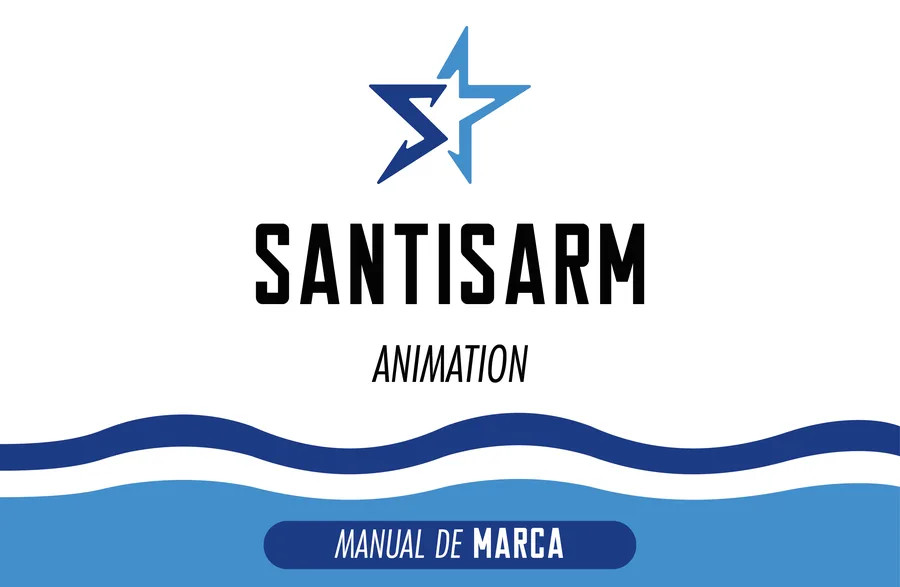
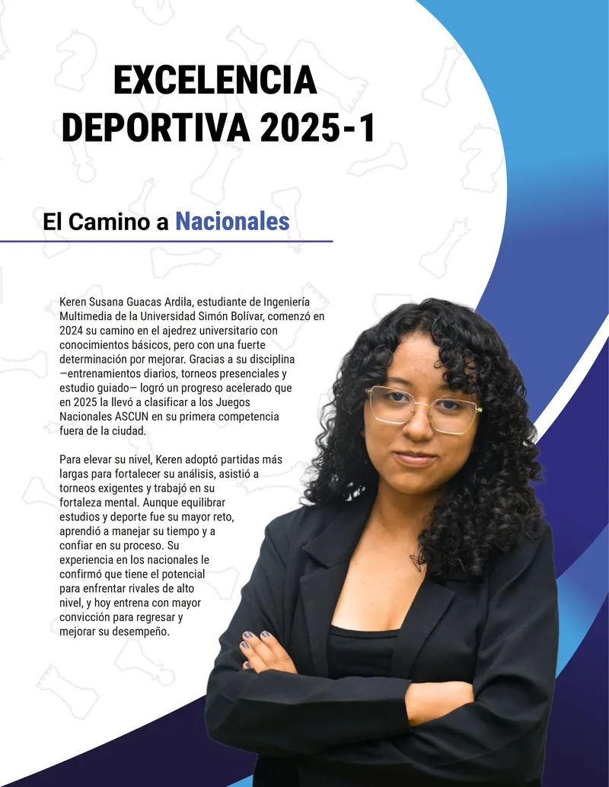
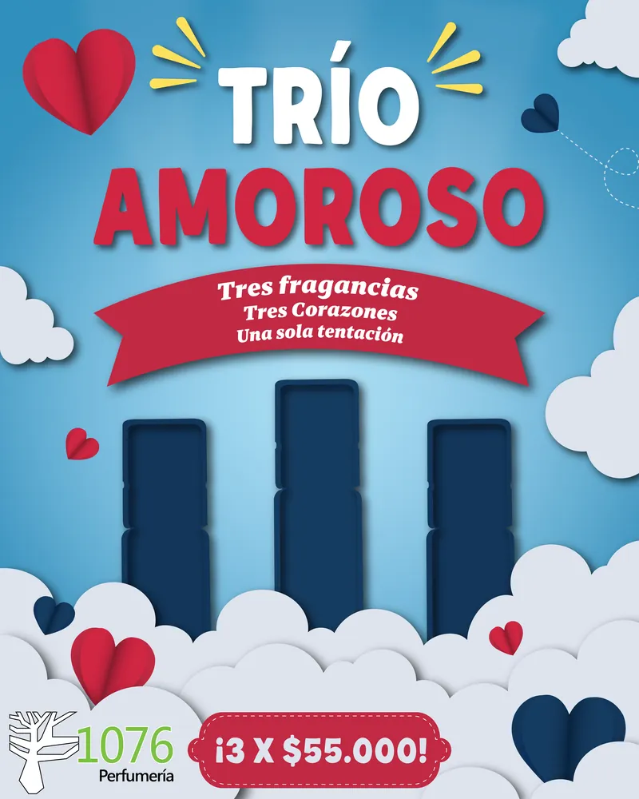
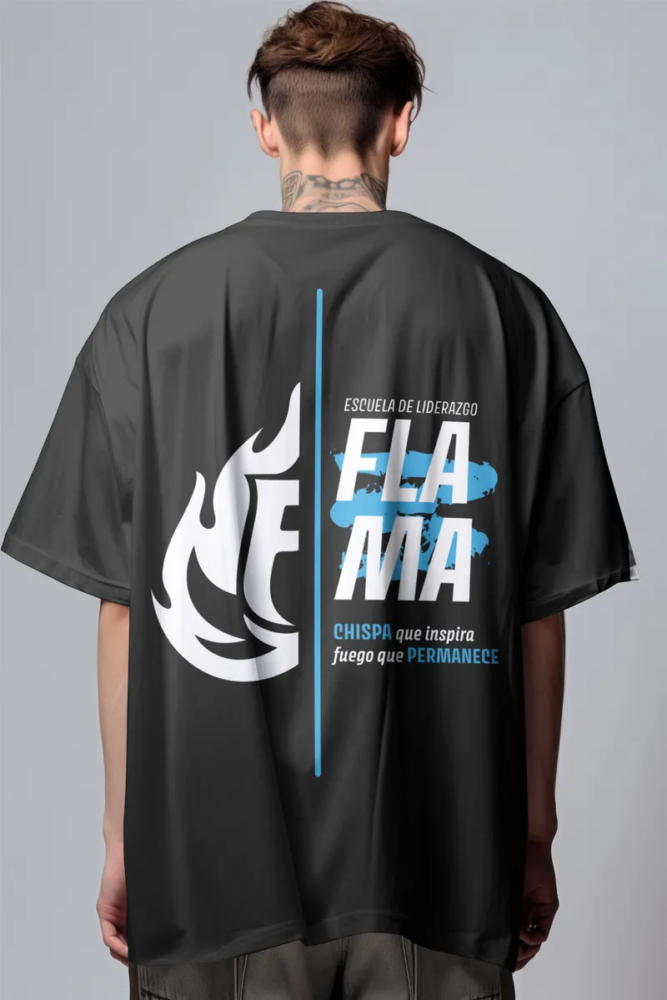
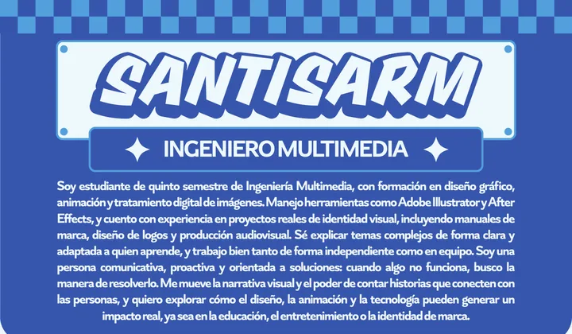
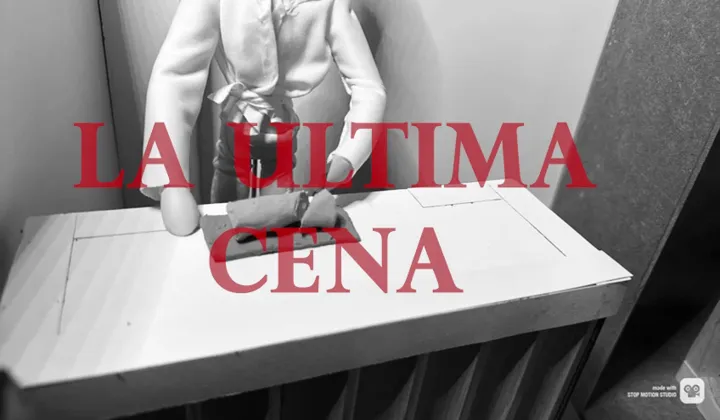
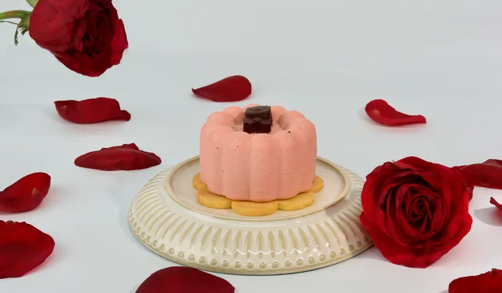
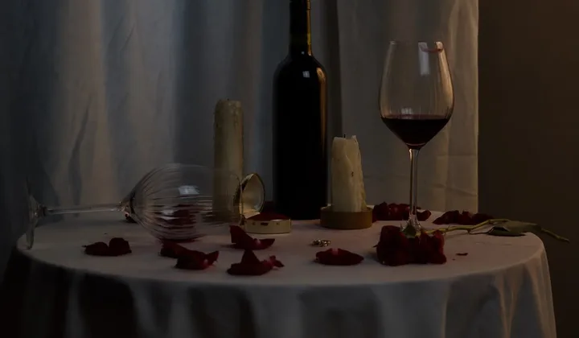

Mi Portafolio
Una selección de proyectos de diseño gráfico, branding, animación y diseño editorial en los que he trabajado durante mi formación como Ingeniero Multimedia.
- 12proyectos
- 5áreas de diseño
- 3.ºpuesto en Colombia 5.0
-
Proyecto destacado
 Hackatón · Aplicación web
Hackatón · Aplicación webSlotNova — Planificación inteligente
Tercer puesto · Colombia 5.0
Página web que genera horarios escolares de forma automática, optimizando la distribución de clases y evitando conflictos entre grados, cursos y docentes.
Mi rol: Ayudé a programar y a plantear mejoras, y con Cielo hice el logo.
- Página web
- VS Code
- Claude (IA)
- Illustrator
En equipo con Cielo Caicedo y Santiago Colmenares
Ver proyecto -
 Diseño Gráfico / Branding
Diseño Gráfico / BrandingFeu Doux Delux
Etiqueta de vino con estilo de grabado (engraving), creada como una metáfora de las amistades profundas: construidas con calma y compartidas sin prisa.
Mi rol: Bocetos, concepto, paleta, tipografía y mood board.
- Illustrator
-
 Identidad Visual
Identidad Visual¿Qué es Marvel Comics?
Pendón de tema libre con estilo visual tipo cómic, explicando la historia y curiosidades del universo Marvel, con una identidad visual clara y consistente.
Mi rol: Boceto, idea, información y pendón completo.
- Illustrator
-

Branding & Identidad CorporativaSantisarm Animation — Manual de Marca
Manual de marca de un estudio de animación ficticio: logo y sus variantes, usos correctos e incorrectos, versiones en positivo y negativo, tipografías, paleta de colores y mockups. Se imprimió al final.
Mi rol: Logo, manual, mockups y envío a impresión.
- Illustrator
-

Diagramación EditorialRevista Up Date — Excelencia USB
Diagramación y diseño de 3 páginas para una revista digital institucional, presentada en el Showroom semestral de la Universidad Simón Bolívar.
Mi rol: La página de Excelencia Académica y parte de la Cultural.
- Illustrator
- Photoshop
En conjunto con Santiago Daniel Colmenares
Ver proyecto -
 Pieza Publicitaria
Pieza PublicitariaLove Market — Feria de Oportunidades
Pieza gráfica promocional para MacondoLab Cúcuta, creada para el evento que conecta emprendimientos con la comunidad de la Universidad Simón Bolívar.
Mi rol: Enfoque retro, pieza gráfica completa y logo.
- Illustrator
En conjunto con Cielo Caicedo
Ver proyecto -

Campaña Publicitaria1076 Perfumería — Campaña "Trío Amoroso"
Campaña del Día del Amor y la Amistad para una perfumería: 5 piezas gráficas para redes y un video promocional, con la idea de que una compra trae tres perfumes.
Mi rol: Diagramación de las piezas y el video, en conjunto.
- Illustrator
- Photoshop
- CapCut
En conjunto con Cielo Caicedo
Ver proyecto -

Branding & MerchandisingFlama — Rebranding Escuela de Liderazgo
Rebranding de Flama, escuela de liderazgo: nuevo logotipo y diseño de camiseta oficial con la frase "Chispa que inspira, fuego que permanece".
Mi rol: Logo, camisetas, mockups y aprobación.
- Illustrator
-

Diseño · Perfil creativoPerfil innprendedor
Mi perfil en un diseño creativo y diferente: arquetipo, CHAI, fortalezas y debilidades, con un personaje propio y un desplegable, para la materia de innovación y emprendimiento.
Mi rol: La temática, la diagramación, el personaje y el desplegable.
- Illustrator
- Ilustración de personaje
- Desplegable
-

Animación · Stop MotionLa última cena — Stop motion
Cortometraje stop motion con plastilina, de tono oscuro y un giro inesperado, hecho en equipo para la materia de animación 2D cumpliendo los principios de la animación.
Mi rol: Escenarios, fotos, movimientos y edición.
- Stop motion
- Plastilina
- App Stop Motion
- Premiere
En equipo con Cielo Caicedo, Santiago Colmenares, Diego Quintero y Juan Manuel Ramírez
Ver proyecto -

Fotografía de productoDulce Suspensión — Fotografía de producto
Fotografía de un postre con rosas suspendidas sobre fondo blanco minimalista: amor, romance y delicadeza, con la regla de los tercios y luz difusa.
Mi rol: La temática y la propuesta, con Cielo, y la toma de la foto.
- Fotografía
- Photoshop
En conjunto con Cielo Caicedo y Diego Alejandro Quintero
Ver proyecto -

Fotografía · BodegónLa propuesta que nunca sucedió — Bodegón
Bodegón sobre el desamor, para la materia de fotografía digital: «lo que queda en la mesa cuando la respuesta es no», con el triángulo de exposición en ISO 800, f/5.6 y 1/60 s.
Mi rol: La idea y el trasfondo, con Cielo, y las fotos entre los tres.
- Fotografía
- Photoshop
- Triángulo de exposición
En conjunto con Cielo Caicedo y Diego Alejandro Quintero
Ver proyecto
¿Te gustó mi trabajo?
Cuéntame qué necesitas. Me encantaría sumarme a tu equipo o ayudarte a sacar tu proyecto adelante.